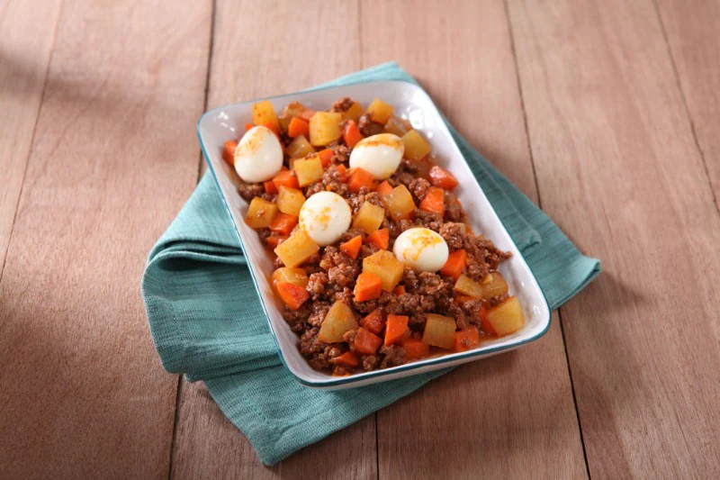
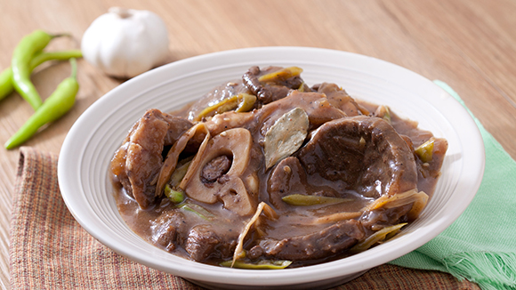
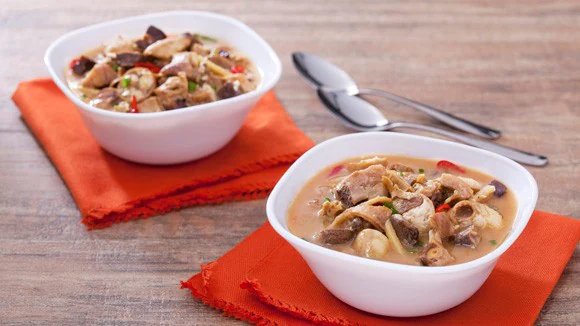
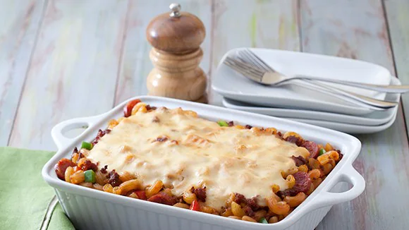
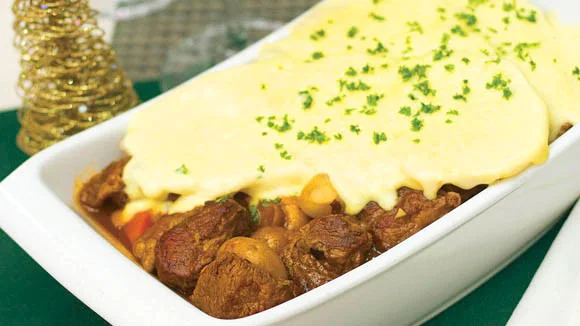

Beef Giniling

INGREDIENTS
INSTRUCTIONS
Begin by getting your pan nice and hot. Pour some oil and sauté onions and garlic.
Add ground beef and simmer until slightly brown.
Pour in the tomato paste, Knorr Beef Cube, potatoes, carrots and water. Cook until potatoes are tender.
Add quail eggs just before serving.
This recipe will remind you of how simple dishes can be filling and more than satisfying. Definitely it’s one for the books!
Paksiw na Bulalo Steak

INGREDIENTS
1 tsp cracked black pepper
1/2 kg beef bulalo, steak cut
1/4 bottle store bought lechon sauce
1 pack dried banana blossom
INSTRUCTIONS
There are 2 things you need to do to prepare this dish. First, make the Bulalo. Second, make the paksiw sauce.
Let’s begin by making our Bulalo. Get your pan nice and hot over medium heat and pour some oil and throw in the onion, garlic and pepper. Turn the heat up and gently add the sliced Bulalo steak and just sear or brown the meat on all sides.
When the meat are all brown, pour in the water and just bring this to a boil over high heat. Then, bring to a simmer and cook for 2 – 5 hours or until the meat is fork tender.
Now that the Bulalo is done, let’s make the paksiw sauce by pouring the lechon sauce, Knorr Beef Cubes, sugar, banana blossoms and bay leaf into the pot. Mix well to fully combine the ingredients and simmer for 10-15 minutes.
Wait till you see the reaction on your family’s faces when they see plated Bulalo Steak with paksiw sauce on top. They will truly thank you for it!
Papaitan

INGREDIENTS
1 kilo beef innards (tripe, kidney, liver, heart, intestines)
2 head garlic, peeled and minced
1 whole white onion, peeled and minced
1/4 cup peeled ginger, julienned or cut into thin strips
4 cups Knorr Sinigang sa Sampaloc broth (dilute 1 pack Knorr Sinigang sa Sampaloc in 4 cups hot water)
1/4 cup spring onion, minced
INSTRUCTIONS
Let’s begin by cleaning the internal organs. Wash and clean the beef innards then transfer to a deep pan or stock pan. Fill this with water and boil. Drain and cut into small ½ inch cubes and set aside.
Get another pan and get it nice and hot over medium heat. Pour some oil and throw in the garlic and onion. Sauté until the garlic is slightly brown and the onions are translucent. Now, throw in the ginger and sauté briefly.
Add the cubed internal organs and stir fry for 5 minutes before pouring the Knorr Sinigang broth just enough to cover all the ingredients.
Gently add the beef bile little by little and don’t forget to taste if the bitterness is just right for your taste preference. Add your minced red chili pepper then season with Knorr Liquid Seasoning, fish sauce, salt and pepper. Transfer to a serving bowl, and with a topping of spring onions, that’s our dish!
Papaitan may have an intimidating taste for some but the version of this recipe will bring you to the moon and back! Try it and see what we mean.
Baked Caldereta Mac and Cheese

INGREDIENTS
1 cup chorizo, sliced 1/2 inch thick
½ cup red bell pepper, diced
½ cup green bell pepper, diced
1 pack Knorr Kaldereta Complete Recipe Mix, dissolved in 2 cups water
2/3 cup Cheddar cheese, grated
INSTRUCTIONS
Let’s begin by dividing the recipe into 3 parts. First, you need to make the meat sauce. Second, the béchamel sauce and last, you just need to assemble them.
To make the meat sauce, you just need to pre-heat your pan in medium high heat and pour some oil. Throw in the garlic and onion and sauté them until the garlic is light golden in color and the onion is translucent.
Now, add the chorizo and ground meat together and cook until light brown in color. Bring the bell peppers in and cook this for another 2-3 minutes before adding the dissolved Knorr Kaldereta Complete Recipe Mix, tomato paste, salt and pepper. Let this boil before simmering until thick. Our meat sauce is now done. Let’s continue by preparing our Bechamel sauce.
To make the béchamel, just melt butter in a saucepan over medium low heat then add the flour. You need to cook the flour for 2-3 minutes in butter for 2 reasons. First: to remove the raw taste of the flour. Second: to give color to your Bechamel. Pour the the milk and water next and stir until thick. Add the Cheddar cheese and stir until melted then set this aside.
Since our meat sauce and Bechamel sauce are done, it’s now time to put them together by tossing the cooked elbow macaroni with the caldereta sauce. Transfer to a baking dish then pour the béchamel on top. Bake the Caldereta Mac n Cheese in a 350 F preheated oven for 30 minutes. You might be wondering now where the parmesan cheese will go. You sprinkle this on top of the pasta just before serving.
When you serve this Caldereta Mac and Cheese Recipe to your family, they will surely thank you for it.
Burgundy Beef Gratin

INGREDIENTS
1 kilo beef, top round, 2 inch cubes
4 pcs carrots, rolling dice
3 pieces potatoes, sliced thinly
INSTRUCTIONS
Begin by getting a nice braising pan hot over medium high heat. Melt butter but make sure to add a bit of oil to prevent the butter from burning. Now, throw in the onions and mushrooms then set this aside.
Gently sear the beef until brown on all sides then set this aside as well.
In the same pan, throw in the carrots, sauté for a few minutes before adding the flour. Stir well until the flour is cooked. Add the water and Knorr Beef Cubes then simmer for a minute.
Pour the wine, thyme, parsely, and bayleaf and simmer for another minute.
Gently add the beef back into the pan and braise for 2 to 3 hours in a 350F oven or until the beef is tender.
After 2 hours, place the onions and mushroom in and continue braising for another 10 minutes.
Cook sliced potatoes until tender and drain.
Add cream, mozarella cheese, and cheddar cheese.
Simmer until thick and season with salt and pepper.